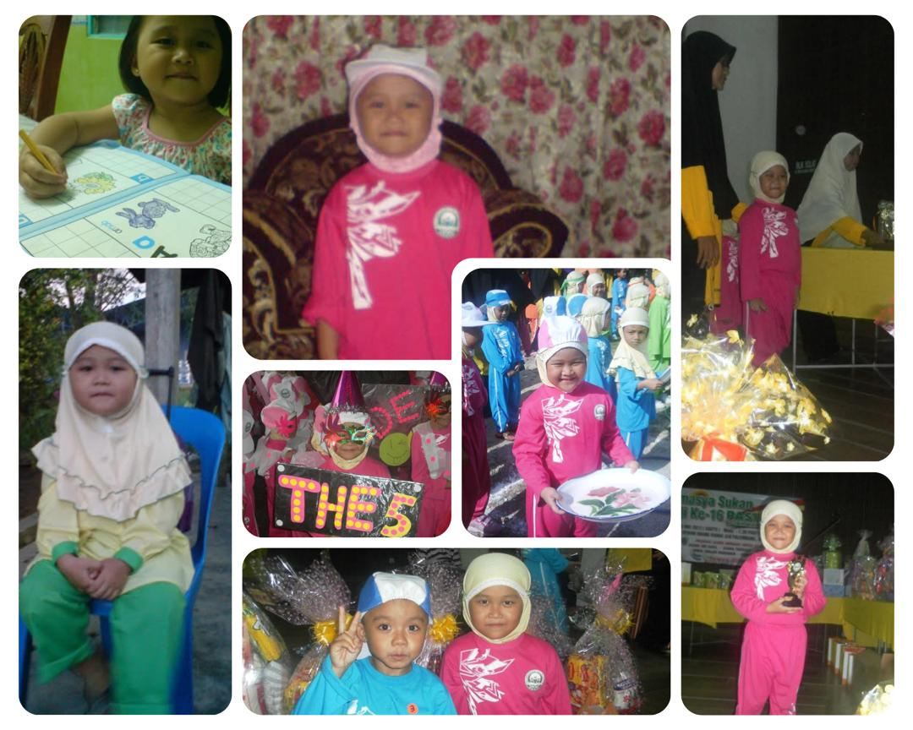
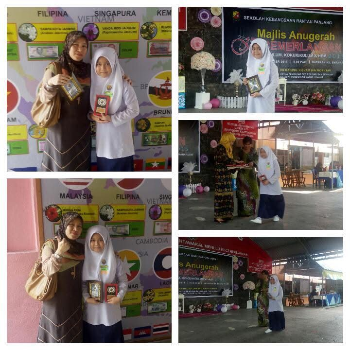
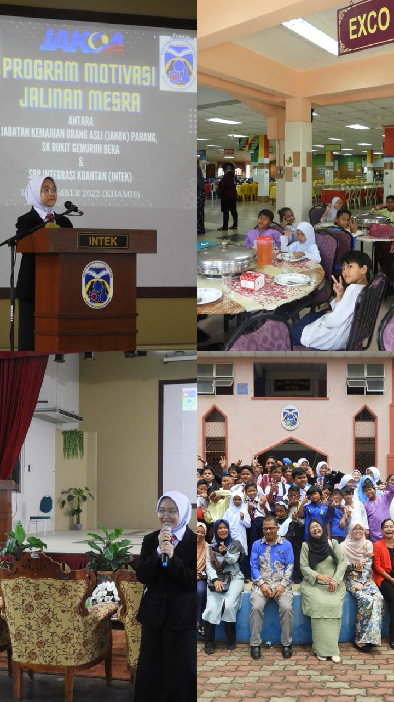
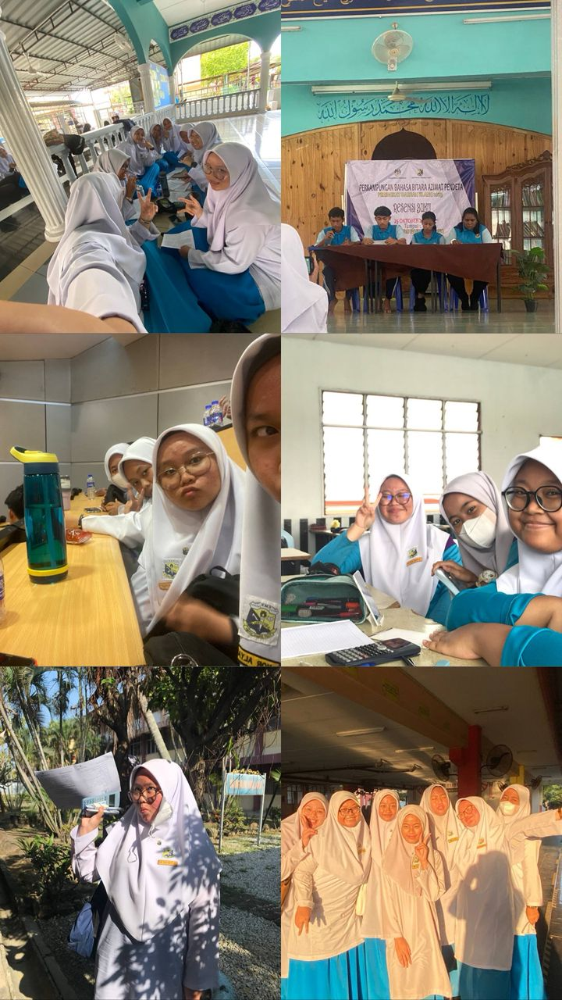
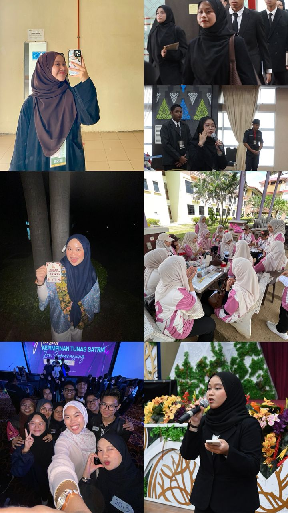

PASTI Al-Ikhwanul Muslimin, Klang, Selangor. (2010–2012)

SK Rantau Panjang, Klang, Selangor. (2013–2018)

SBP Integrasi Kuantan, Pahang. (2019–2023)
SMK Rantau Panjang, Klang, Selangor. (2023–2024)


UiTM Kedah – Diploma in Library Informatics (2023–current)
